Reference: @josettedubai — "Morning Moments at Josette" (17.78s) | Client adaptation: Greek island shoreline concept
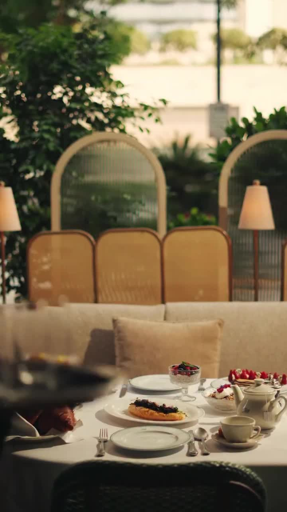
Full breakfast table in soft morning light — rattan arch screens, twin floor lamps, plush banquette with cushions, multiple dishes already set. A blurred object drifts across the foreground adding depth.
Wide establishing shot of your terrace breakfast table set by the water. White linen, terracotta ceramics, olive branches, and sea in the background. A hand or shawl drifts across the foreground. Greek morning light.
Shoot golden hour or early morning. Use a gimbal for slow push-in. Foreground element adds cinematic depth.
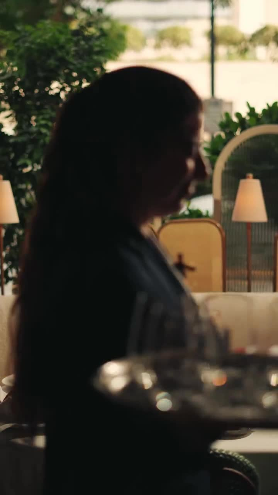
A person (waiter / staff) walks through frame from behind, silhouetted against the restaurant interior. Table and lamps are visible behind them. Creates movement and sense of life in the space.
A waiter in linen uniform walks past the terrace table carrying a tray, silhouetted briefly against the Aegean sea view. Fast, organic movement — just 1–2 seconds.
Shoot from low angle. Let the figure walks through and exit frame quickly. Keep shallow depth of field.
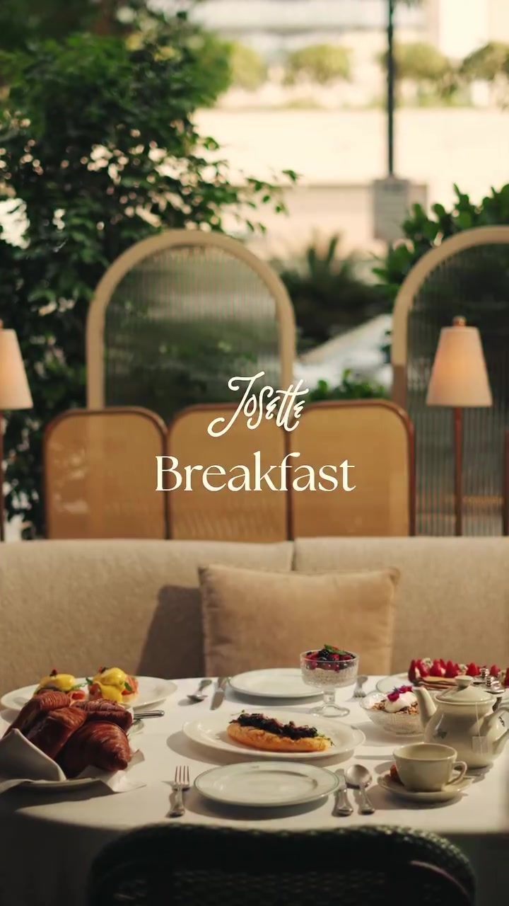
Same table angle as Shot 1, now with the brand title 'Josette Breakfast' overlaid in elegant white script at centre-frame. Multiple dishes visible across the spread.
Same wide table shot with your restaurant name and 'Breakfast' overlay in matching brand typography. Keep the sea and terrace visible in the background.
Add brand title in post. This is your title card — same clip as Shot 1 or a clean cut of it.
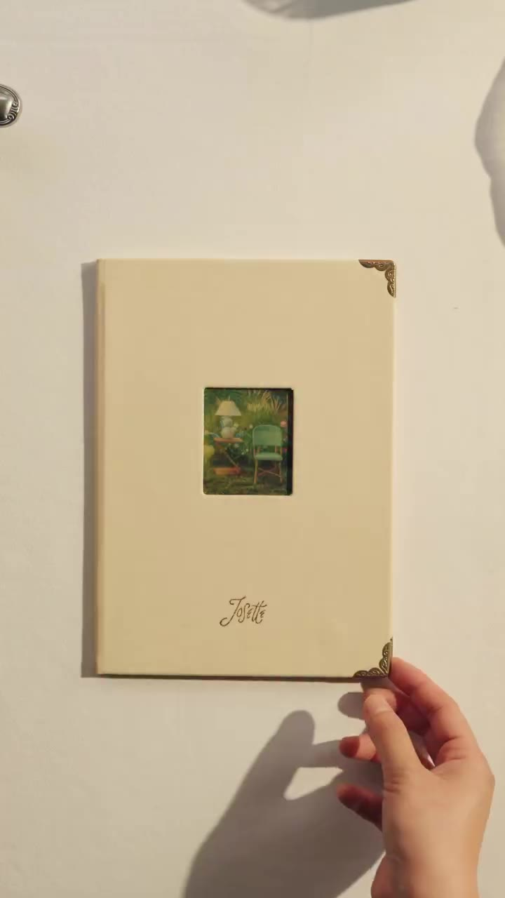
Cream/ivory hardcover menu held in one hand, shot overhead on a white table. Small inset photo window in the centre, gold corner brackets, brand script at the bottom. Clean, minimal, luxurious.
Close-up of your menu cover held by hand. Use a linen or leather-bound menu with your logo. Shoot on the white table with morning shadows. The brand should be clearly legible.
Natural directional light for sharp shadows. Keep background clean. Horizontal hold looks elegant.
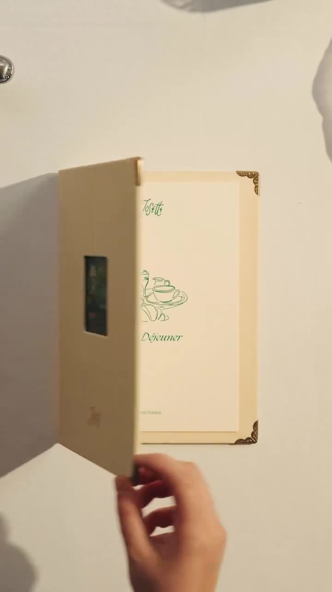
Menu being flipped/opened in motion — back cover visible mid-open with the inside spread beginning to appear. Gold corner brackets. Dynamic mid-transition frame.
Shoot the menu being opened by a hand. The motion reveals the inside pages. Keep it tactile — you want to see the weight and texture of the menu cover.
Shoot at 60fps for optional slow-motion. This is a quick transitional clip — just 0.5–1 second.
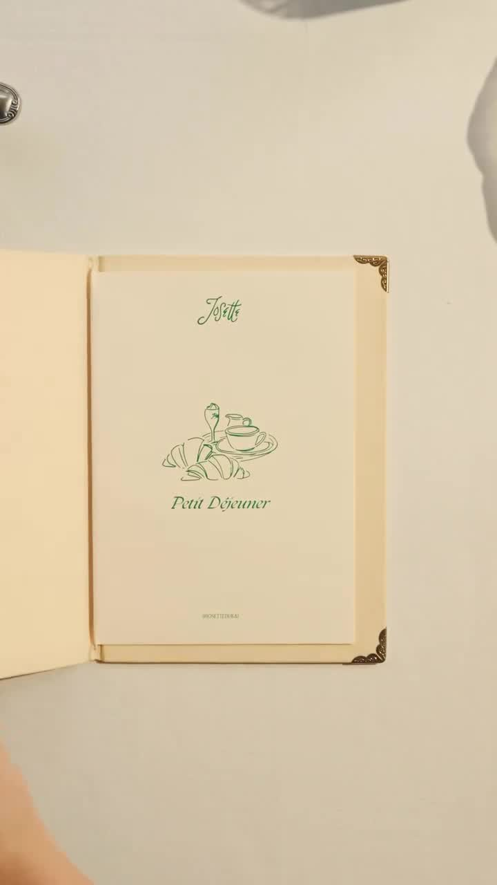
Open menu spread flat on white table, fully open showing both pages. Clean script typography with category headings visible. A hand holds it lightly at the bottom. Very clean, editorial.
Overhead shot of your open menu on the table. Show the full spread — typography, sections, any photography or illustrations. Keep it editorial and clean.
Shoot directly overhead (flat lay). Even, diffused light. No shadows across text.
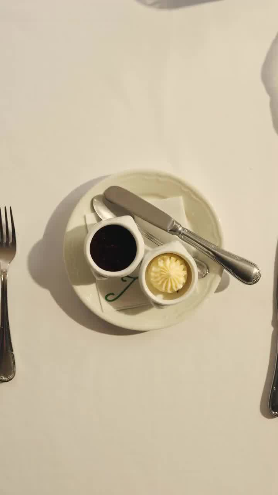
Extreme macro of a croissant's layered, flaky texture — shot so close only the laminated folds and golden crust are visible. Slight warm bokeh behind. Almost abstract.
Extreme close-up of your best pastry — croissant, spanakopita, or similar laminated texture. Fill the entire frame with the flaky golden layers. Pure food porn.
Use a macro lens or extension tube. Shallow DOF. Find the best light angle to show the texture — usually side or back light.
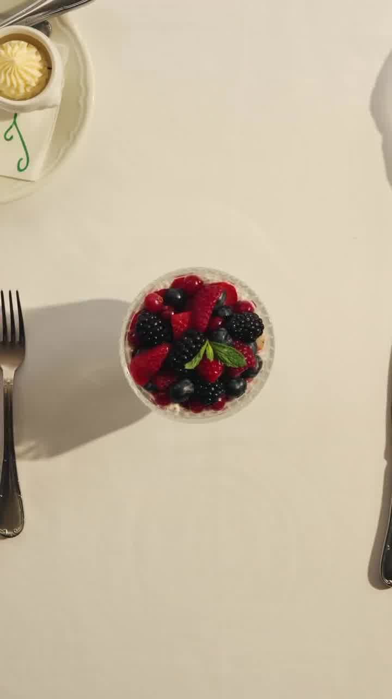
Overhead shot of a white plate with a small pastry — appears to be a pain au chocolat or similar. Gold rim plate, soft morning shadows, clean white table. Simple and elegant.
Overhead editorial shot of a single pastry on your signature plate. Terracotta or white ceramic. Simple styling — one herb sprig or a dusting of icing sugar. Morning light.
Overhead flat lay. One hero item, clean plate. Make it feel effortless and editorial, not styled to death.
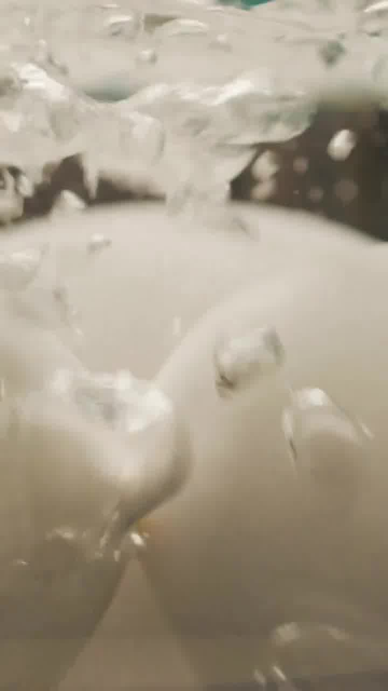
Close-up of a perfectly fried egg on a white plate — yolk intact and glossy. Shot tight enough that the yolk nearly fills the frame. Gentle reflective sheen on the yolk surface.
Close-up of a perfectly cooked egg — fried, poached, or a soft-boiled cut-open. Your Greek twist: sprinkle of herbs or olive oil. The yolk colour is the hero — vibrant orange.
Shoot the egg immediately after plating while the yolk still shines. Quick shot — you have about 90 seconds before it dulls.
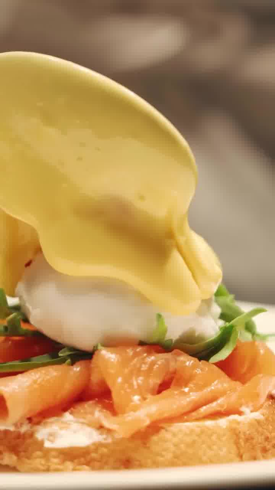
A reframed version of the wide table shot — slightly different angle revealing more of the scene. Multiple dishes: egg, salad, pastry, juice visible across the table. Sunlit and abundant.
Second wide angle of your full table spread. Reveal the abundance — multiple dishes, the view, the setting. This is your 'hero spread' shot from a slightly different angle.
Use this as a variation on the establishing shot. Move the camera position slightly — even 30cm creates a new visual. Slow controlled move.
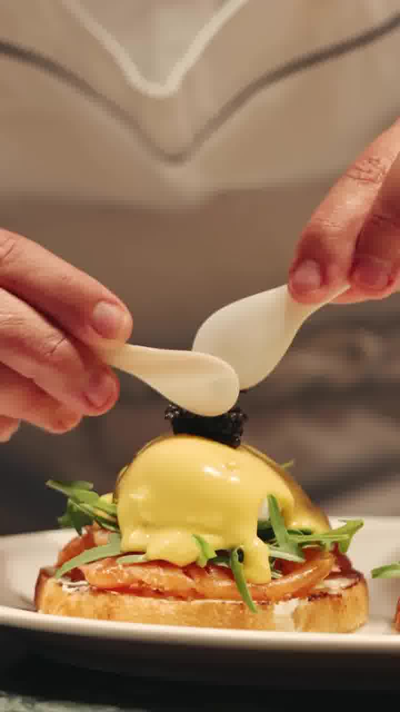
Close overhead shot of a white bowl/plate with a creamy spread (hummus, labneh, or ricotta), topped with olive oil, fresh herbs and seasoning. Spoon handle visible. Very sensory.
Your labneh, tzatziki, or whipped feta in a bowl with olive oil, fresh herbs, za'atar. Shot overhead, tight. The oil pooling on white is very Mediterranean. Get the texture.
Use a shallow bowl so the dip fills the frame. Garnish just before shooting — fresh herbs wilt quickly. Top light or slight side light.
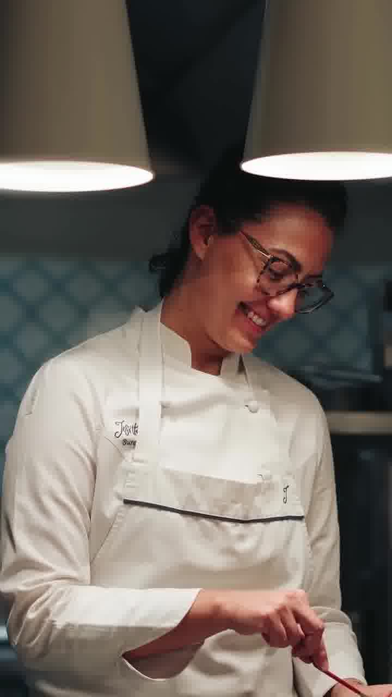
Overhead close-up of a vibrant salad bowl — cucumbers, cherry tomatoes, leafy greens, possibly some grains. Very colourful. The plate fills most of the frame. Fresh and vivid.
Overhead close-up of your Greek salad, grain bowl or mezze spread. Vibrant tomatoes, cucumbers, olives, herbs. The colour palette — red, green, white — is the visual story. Keep it fresh.
Shoot immediately after dressing — the oil makes it glisten. Slight overhead tilt can look good with salads. Tight crop.
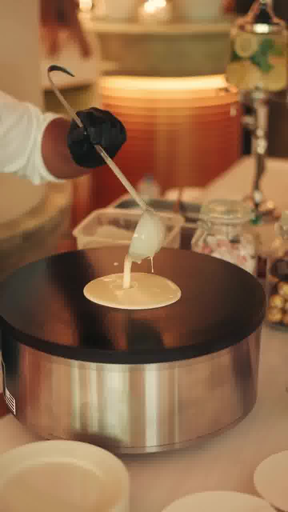
Close-up of fresh orange juice being poured into a clear glass. The glass is about half-full, and the juice stream is mid-pour. Warm, golden colour. Simple and refreshing.
Fresh orange juice pour — close-up on the glass and the stream. Mediterranean breakfast classic. Use a wide-mouth glass so the pour is visible. Natural light through the liquid.
Shoot at 60fps — slow motion pour looks stunning. Backlight the juice for glow. Have someone pour while you film.
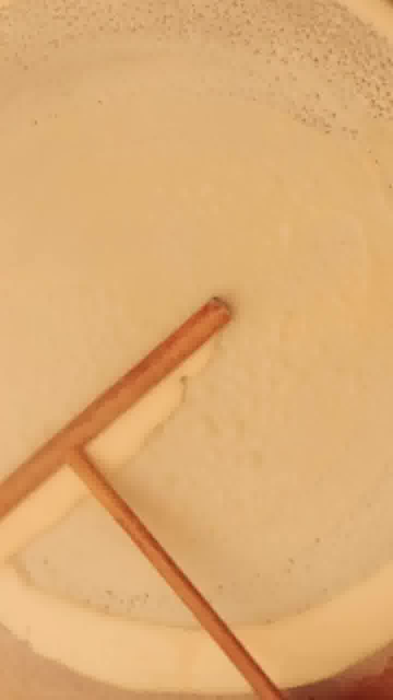
Static close-up of the filled orange juice glass. Clear glass, vivid orange juice, bubbles or froth on top. Clean background. A moment of stillness after the pour.
Static shot of your freshly-squeezed juice glass. Add a small garnish — mint sprig, half orange slice. Let it settle and film a 2-3 second hold. Clean and appetising.
This is a beat — a still pause. Let the juice settle. Pick up any condensation on the glass for texture.
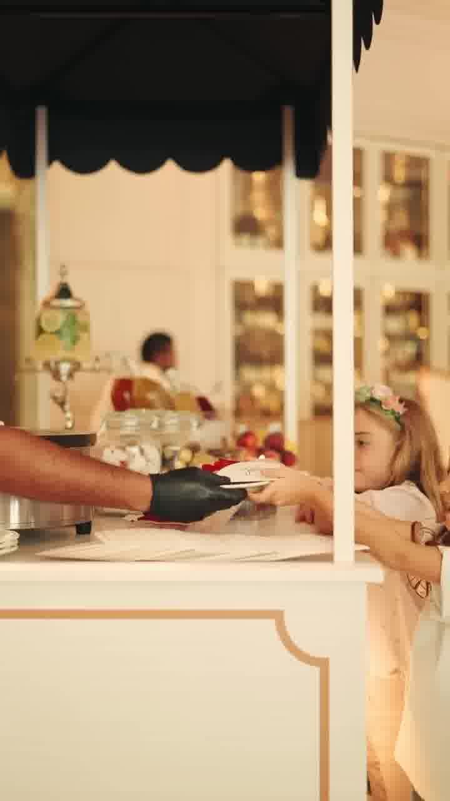
Close overhead shot of a bowl with creamy yoghurt, granola or muesli, and fresh berries / fruit slices on top. Spoon visible. Clean white bowl against white surface. Very fresh and clean.
Your Greek yoghurt bowl — thick strained yoghurt, honey, walnuts, fresh figs or berries. The white-on-white with gold honey is very Mediterranean. Overhead close-up.
Style the bowl top well — the honey drizzle and nut placement matter. Shoot immediately to catch the drizzle before it sinks.
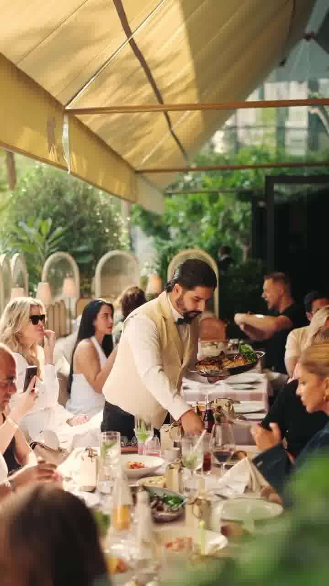
Close-up of water being poured into a crystal clear glass. The stream is thin and elegant. Water level rising in the glass. Clean, crisp, refreshing moment.
Still water being poured into a clear glass with a lemon slice or cucumber. Hydration beat between food shots. Keep it crisp and clean. Back-lit for maximum clarity.
Very simple but important pacing beat. Could use sparkling water for bubbles. Same 60fps/slow-mo treatment as OJ pour.
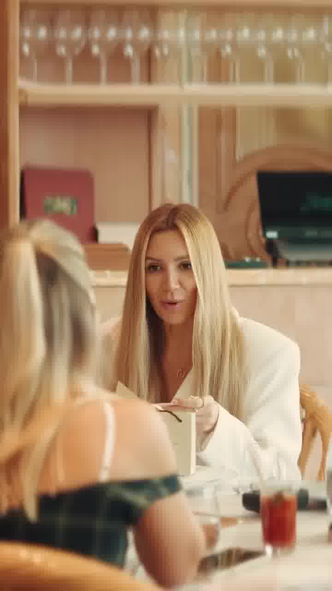
Top-down overhead shot of a hand spreading crepe batter on a circular crepe pan using a wooden spreader/batter T-stick. The batter is being spread outward in a circular motion. Very tactile and rhythmic.
Overhead shot of a hand preparing something circular — spreading labneh on bread, spreading tzatziki, or even making a crepe if you serve them. The circular motion is the visual key.
This is a 'behind the scenes' prep shot — gives authenticity. Shoot from directly above. The circular motion should fill the frame.
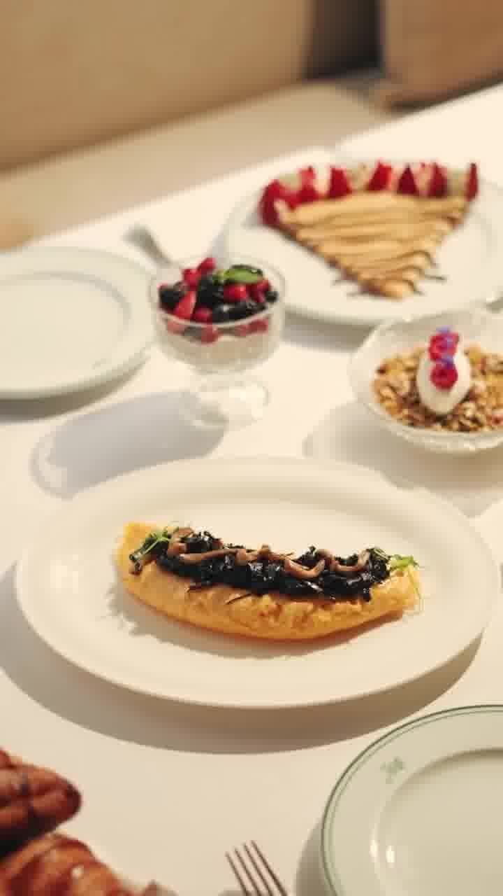
A young child (toddler/small child) at eye level with a pastry or dessert display counter, reaching up or examining the items. Shot from behind / side. Innocent, joyful, human moment.
A child — guest, local, or family — discovering something delicious. Could be reaching for a pastry, pointing at something on display, or reacting to food. Keep it candid and natural.
This is your human warmth shot. Let it happen naturally — don't over-direct the child. Shot from low angle (eye level with child). Quick 1-2 second moment.
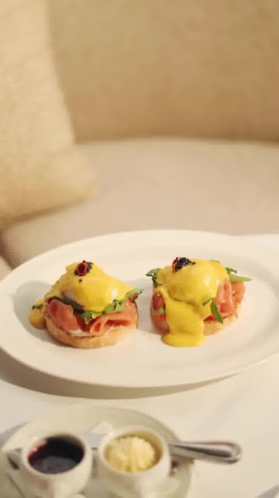
Exterior shot of the restaurant location — a street or outdoor area outside the venue. People walking past. Gives context for the location and neighbourhood. Slightly longer establishing beat.
An exterior shot of your venue or the Greek island street/waterfront nearby. People walking, boats in the background, or the local architecture. Context and place. Keep it atmospheric.
Shoot at golden hour for warm light on the exterior. If no clear exterior, use a wide shot of the island waterfront or beach nearby.
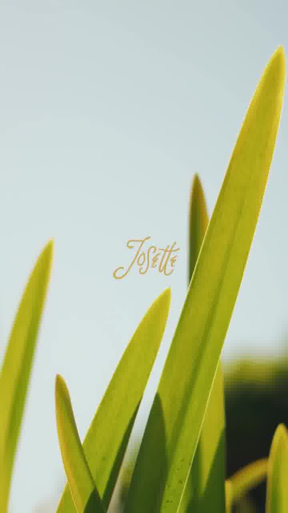
Final wide table shot — same composition as Shot 1 establishing shot — now with logo and branding overlay 'Josette Breakfast' fading in. Peaceful, complete. A return to the opening frame with brand identity.
Return to your opening wide table shot — the terrace, the sea, the full spread. Your logo and restaurant name fades in. A moment of brand recognition and beauty. This is the closing card.
This is a bookend to Shot 1. Use the same angle and similar timing. Add your logo in post. Fade to white or black.